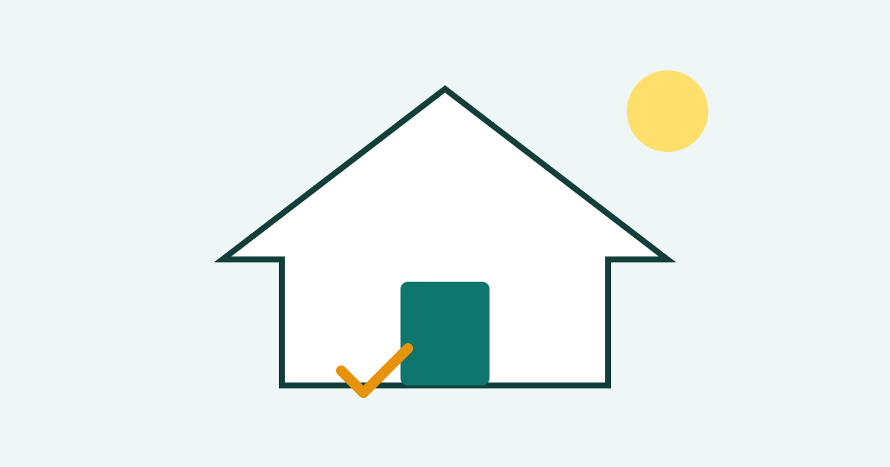

How to Keep a Small Home Tidy in 15 Minutes a Day

A small home can feel messy very quickly. One unwashed plate, a pile of clothes on a chair, and a few items left on a table can make the whole room look untidy. The good news is that a small home also becomes tidy quickly. You do not need a long weekend clean. A short, regular routine of about fifteen minutes a day is often enough to keep surfaces clear, floors clean, and the home feeling calm. The key is to do a little, often, and in the same order every day.
Step 1: Set a Timer and Pick One Round
- Choose the same time each day, such as after dinner or before bed, and set a timer for fifteen minutes.
- Start at the front door and move through the rooms in order, so you do not miss a spot or repeat one.
- Carry a small basket or bag for items that belong in another room, and put them away at the end of the round.
A timer helps because it makes the task feel limited. Fifteen minutes is short enough to start without dread, but long enough to make a real difference. Moving in one direction also stops you from wandering from room to room with a single item in your hand. If you find something that needs a deep clean, do not stop the routine to do it. Note it for later, and keep moving. The daily round is for tidying, not for major cleaning.
Step 2: Clear Surfaces First
- Clear kitchen counters, tables, and desks of items that do not belong there.
- Put dirty dishes in the sink or dishwasher, and return books, bags, and chargers to their usual places.
- Wipe one or two surfaces if they are dusty or sticky, but do not try to clean the whole home in this step.
Surfaces make the biggest visual difference. A clear table makes a room look tidy even if a cupboard behind it is not perfect. In a small home, every surface is visible, so a few items can change the whole feeling of the room. Giving everything a home helps here. If an item has no usual place, it will always end up on a table or chair. Choose one spot for keys, post, chargers, and other everyday items, and return them there every time.
Step 3: Deal With Clothes, Bins, and Floors
- Hang up or fold clothes that are clean, and put worn clothes in the laundry basket, not on a chair.
- Empty small bins before they overflow, and take recycling out if it is piling up by the door.
- Do a quick sweep or vacuum of the most-used area, such as the kitchen or hallway, if time remains.
Clothes are one of the fastest ways for a small home to look messy, because a chair can become a second wardrobe in a single day. A simple rule helps: if you take it off, it goes on a hanger or in the basket, never on the chair. Bins work the same way. A bin that is emptied often never becomes a problem, while an overflowing bin makes the whole room feel neglected. Floors do not need to be perfect every day, but a quick clean of the busiest area keeps dust and crumbs under control.
Step 4: Finish With a Two-Minute Reset
- Fluff cushions, straighten a rug, and open a window for fresh air if the weather allows.
- Check that the front door area is clear, with shoes in one place and coats hung up.
- Stop when the timer ends, even if a small job is unfinished, and leave it for tomorrow.
The final reset is small, but it changes how the home feels when you sit down. A straight rug and a clear entrance give a sense of order that lasts into the evening. Stopping on time is just as important. If the routine grows into an hour, you will soon avoid it. Fifteen minutes, done most days, beats a long clean done once a month, because mess never has time to build up into a large, discouraging job.
Common Mistakes
A common mistake is trying to tidy the whole home in one session and then feeling exhausted. A daily routine works because it is short and repeatable. Another mistake is moving items from one surface to another instead of putting them away. Shifting a pile from a table to a bed does not make the home tidier; it only moves the problem.
People also buy storage boxes before they have reduced clutter. Boxes can help, but they can also hide mess and make it harder to find things. Start by removing items you no longer use, then choose storage for what remains. Finally, do not wait until the home looks terrible. A tidy routine is easiest to keep when the home is already mostly tidy, so a small daily effort protects the result.
Frequently Asked Questions
What if I miss a day?
Nothing serious happens. Just return to the routine the next day. A missed day may take a few extra minutes, but it will not undo the habit if you start again quickly.
Should I clean or tidy first?
Tidy first. It is hard to clean a surface that is covered in items. Once surfaces are clear, cleaning becomes faster and more effective.
How do I keep shared spaces tidy?
Agree on simple shared rules, such as dishes in the sink after meals and shoes by the door. Short, clear rules are easier for everyone to follow than long lists.
Is fifteen minutes really enough?
For daily tidying in a small home, yes, once the habit is established. Deep cleaning, such as washing windows or cleaning behind furniture, still needs separate time, but it is needed less often.
Conclusion
Keeping a small home tidy is less about effort and more about rhythm. A timer, a clear order, clean surfaces, and a quick final reset turn a large, stressful job into a short daily habit. Start tomorrow at the same time, keep it to fifteen minutes, and let the routine do the work. Within a week, you may find that tidiness starts to take care of itself.